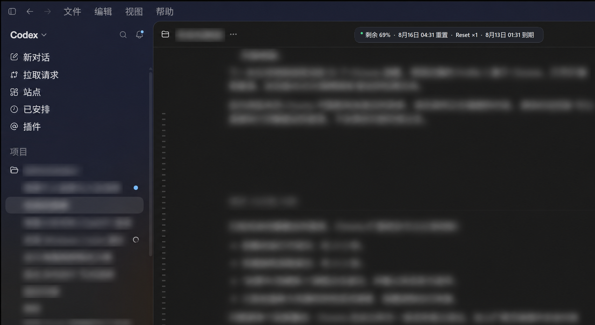

Your Codex quota,
always in sight.
A tiny, privacy-friendly overlay for Codex Desktop on Windows and macOS.
- Native placement
- Sits beside the conversation title.
- Local by default
- Quota data stays on your device.
- Windows + macOS
- One tiny tool. Two platforms.

One line. Right where you need it.
-
1
Find Codex
Detect the official Codex Desktop window without reading its title.
-
2
Read local quota
Ask the documented local App Server for rate-limit data.
-
3
Stay out of the way
Hide immediately when Codex is no longer active.
Small by design.
Big on clarity.
Remaining quota, next reset time, and available reset credits appear on one compact line—without another window or context switch.
- Click-through and never takes focus
- High-DPI and multi-monitor aware
- Tray or menu-bar placement controls
No account scraping.
No secrets uploaded.
Quota reads, foreground detection, and placement run locally. Public builds have no telemetry endpoint configured.
The site has no analytics, cookies, forms, or tracking pixels.
Read the full privacy policy →Choose your platform
Windows 10/11
x64 setup installer
macOS 12+
Preview packages are unsigned. Verify the SHA-256 file on GitHub before opening.
See system requirements →